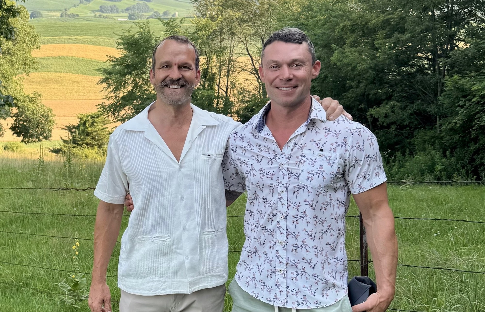

About.
William Butcher and Eric Welch founded New Madison Development in 2017. Together we seek out and find unique development sites, both in the downtown core and in outlying areas, specializing in finding promising sites that have been overlooked or are hiding in plain sight.
Our work includes two apartment communities, Starkweather Place and Trader's Way, totaling 256 units, and three industrial buildings reinvented as office and hospitality spaces.

William has worked in Madison real estate since 2002 as an agent, broker, investor, and developer. As a broker he has represented clients on more than $250 million in closed transactions, many of them development acquisitions that became more than $1 billion in built assets. He represents buyers and sellers of development sites, office, retail, land and investment property, and landlords and tenants. He owns Principal Madison.
Born and raised in Monona, Eric's career has spanned construction, investing, and developing multifamily and retail real estate in Madison, Milwaukee, and satellite communities. He continues to operate his own painting and contracting company, established in 2004.